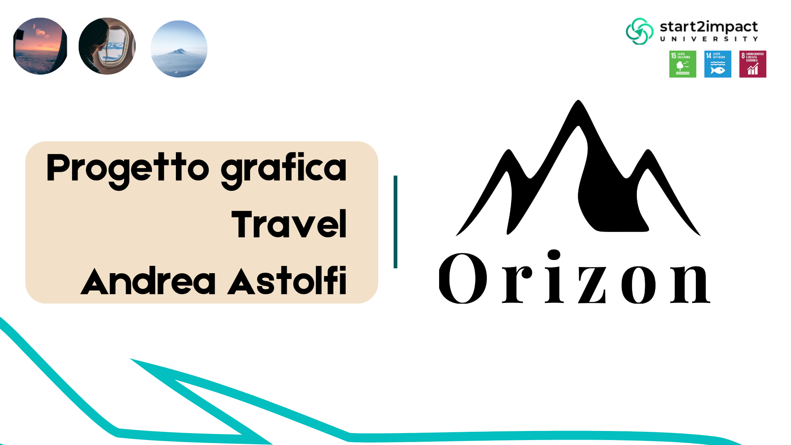
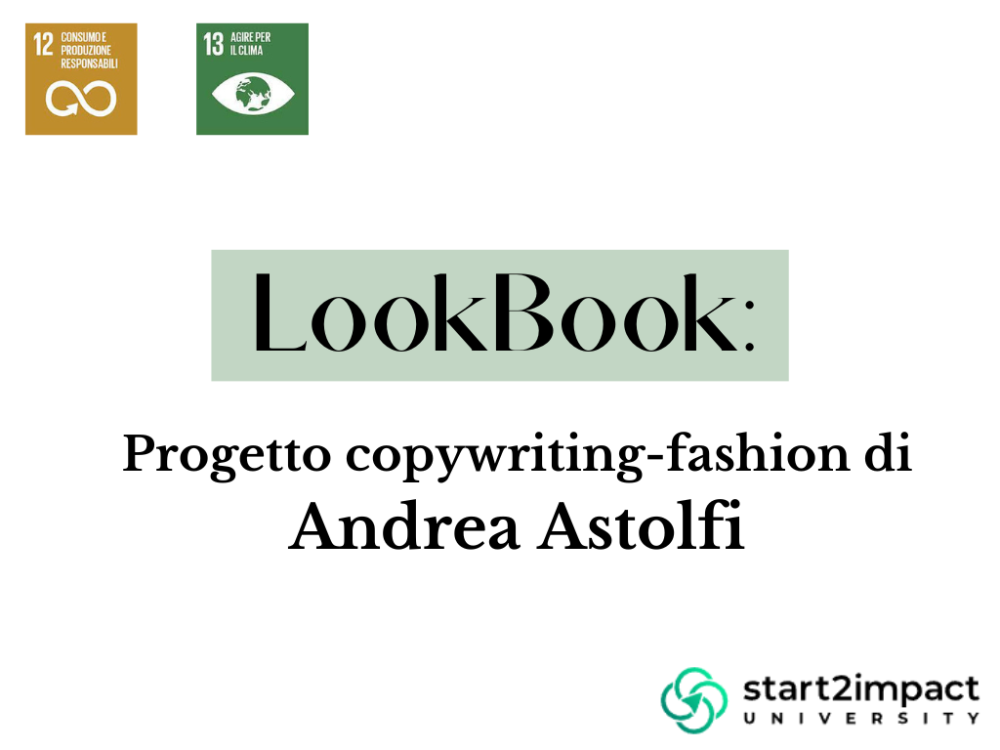

Migliori Progetti

Grafica
In questo progetto ho dovuto creare contenuti su più canali social per un'agenzia di viaggi
Vedi Progetto

Copywriting
In questo progetto è stata testata la mia capacità di scrivere in maniera persuasiva
Vedi Progetto
Analisi Strategica
Ho fatto l'analisi strategica della comunicazione social di un'azienda di scarpe
Vedi ProgettoHTML e CSS
In questo progetto realizzo un portfolio in codice HTML e CSS utilizzando bootstrap
Vedi Progetto